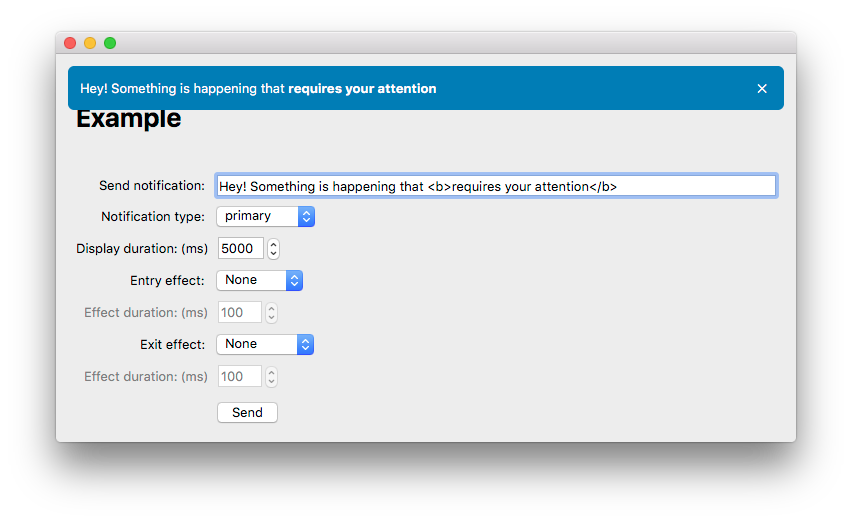

Manual¶


QNotifications brings pretty in-app notifications to PyQt. We are used to seeing such notifications in many web applications nowadays (as an example, see sAlert), but functionality like this was still lacking in PyQt. QNotifications aims to provide a system that can display several types of notifications (info, errors, warnings, etc.) and can easily be plugged into existing PyQt projects. To integrate this module into existing applications just pass it a widget on which it should render the notifications.
I designed this system with the Gnome UI guidlines for in-app notifications in mind. However, I do deviate from them at some points. For example, QNotifications currently allows multiple notifications to be displayed simultaneously (they will be stacked on top of each other), while best practice is to display multiple notifications sequentially but only one a the time. Additionally, QNotifications currently does not offer the possibility to display a button to undertake an action inside a notification.
This project is still in the starting blocks and does not offer many options for customisation yet. Notifications are always positioned at the top of the target widget and take up the whole width (with a margin). The only currently supported animation style is fading (in and out), or not to use any animation at all. In the future, more options will be added, but for now I have just focussed on maximizing the stability of this module.
Installation¶
QNotifications can easily be installed using pip:
pip install python-qnotifications
If you are using the Anaconda Python distribution (by which you will be doing yourself a big favor), the module is also available as a conda package in the conda-forge channel on anaconda.org:
conda install qnotifications -c conda-forge
Alternatively, you can just clone this repository and install it yourself:
git clone https://github.com/dschreij/QNotifications
cd QNotifications
python setup.py install
Dependencies¶
QNotifications of course heavily relies on PyQt and the abstraction layer qtpy, which makes it easier to write code that works with PyQt4 and 5 at the same time, but that should be all you need to make it work.
Example¶
The module comes with a ready to run example (given that the dependencies are installed). To see what QNotifications has in store, simply run:
python example.py
and play around with the interface which offers various possibilities to display notifications.
Usage¶
To use QNotifications, you have to initialize the QNotificationArea first, which is a transparent widget in which the notifications are to be displayed. This widget is overlayed on top of another widget already embedded in your application. This embedded widget has to be passed to the constructor of QNotificationArea.
from qtpy import QtWidgets, QtCore
from QNotifications import QNotificationArea
# Create a widget to render the notifications on.
targetWidget = QtWidgets.QWidget()
targetWidget.setGeometry(100,100,800,600)
# Create a new notification area, and pass it the target widget.
qna = QNotificationArea(targetWidget)
# Show the target widget.
targetWidget.show()
# Show a 'primary' styled notification for 1 second.
qna.display('This is a primary notification', 'primary', 1000)
# Show an 'info' styled notification for 2 seconds.
qna.display('This is an info notification', 'info', 2000)
# Show a 'danger' styled notification until the user closes it manually.
qna.display('This is an error notification', 'danger', None)
The message can contain (a limited set of) HTML tags, which will be rendered correctly when the message is displayed.
Animations¶
To enable animations, you have to specify the animation style, for which at the moment the only the only options are ‘fadeIn’, ‘fadeOut’ or None. All notifications will be displayed with that animation style from that moment on until a different animation style is specified.
# Make the notifications fade in in 500 milliseconds.
qna.setEntryEffect('fadeIn', 500)
# Make the notifications fade out in 1 second.
qna.setExitEffect('fadeOut', 1000)
# From now on, notifications will fade in in 500 ms and fade out in 1 second
# Show a 'succes' styled notification for 2 seconds.
qna.display('The thing you did succeeded!', 'success', 2000)
# Show a 'warning' styled notification for 2 seconds.
qna.display('Time to pay some attention', 'warning', 2000)
Signal/Slot capabilities¶
The display() function of QNotificationArea also functions as a pyqt slot, expecting 3 arguments of type (str, str, int), corresponding to the contents of the message, its type, and the duration with which to display it. If one for instance would define a signal in an object that inherits from QtCore.QObject, the following is possible:
class Example(QtCore.QObject):
notify = QtCore.pyqtSignal(str,str,int)
def __init__(self):
### Do some object initializations here where you also
### create a QNotificationArea.
self.notify.connect(qna.display)
self.notify.emit("Object initialized","info",2000)
A notification can then be displayed from anywhere by just emitting the objects notify signal with the desired parameters.
Styling¶
QNotifications has been built in such a way that the appearance of its elements can be directly altered using QSS (which is Qt’s variant of CSS). When not explicitly instructed to do otherwise, QNotifications will use the default styles, which are based on bootstrap’s color coding principles. The standard styles are as follows
QNotification {
font-size: 16px;
padding: 0px;
margin: 0px;
border-radius: 6px;
}
QNotification #message{
color: #FFFFFF;
padding: 0px;
margin: 0px;
width: 100%;
}
QNotification #closeButton{
color: #FFFFFF;
padding: 0px;
margin: 0px;
}
QNotification #primary {
background-color: #337ab7;
border-color: #2e6da4;
}
QNotification #success {
background-color: #5cb85c;
border-color: #4cae4c;
}
QNotification #info {
background-color: #5bc0de;
border-color: #46b8da;
}
QNotification #warning {
background-color: #f0ad4e;
border-color: #eea236;
}
QNotification #danger {
background-color: #d9534f;
border-color: #d43f3a;
}
To use a different (most of the time globally defined) style sheet, pass the useGlobalCSS flag to QNotificationArea when you initialize it
qna = QNotificationArea(targetWidget, useGlobalCSS=True)
Pay attention though, that if you pass this flag and you don’t have any entries for the QNotification items in your qss files, they will have no styling at all.
License¶
QNotifications is distributed under the terms of the GNU Lesser General Public License 3. The full license should be included in the file license, or can be obtained from: